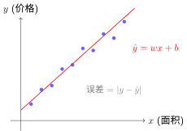
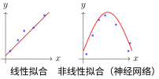
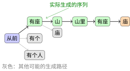
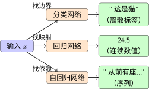

学习任务的形式#
计算图中介绍的计算图描述了数据如何在模型中流动。但数据流向什么样的目标？不同类型的"规律"需要不同的数学建模方式。
机器学习在找什么规律？#
机器学习的本质是从数据中发现规律，然后用这些规律做预测 [Bis06]。但"规律"有不同形式：
规律类型 |
核心问题 |
例子 |
|---|---|---|
类别边界 |
这类事物有什么共同特征？ |
识别猫和狗 |
数值映射 |
输入输出是什么关系？ |
根据面积预测房价 |
序列依赖 |
下一步应该是什么？ |
续写句子 |
这三种规律对应三种任务类型：分类、回归和自回归。它们共享相同的计算图计算机制，但目标的数学形式截然不同。
分类任务：发现类别边界的规律#
想象你在教小孩认动物。你不会给他看一张 checklist，而是指着图片说：“这个有四条腿、有毛、会汪汪叫，所以是狗。”
分类的本质：找到区分不同类别的边界——边界这边是A类，那边是B类。
在特征空间中，每个样本是一个点，分类就是画一条决策边界把空间切开：

分类任务的决策边界
关键洞察：
边界这边聚集着同类样本
边界是"模糊"的（软边界），不是一刀切的硬线
新样本落在哪边，就预测为哪类
数学形式：分类模型输出类别概率分布 \(p(y=k|x)\)，其中 \(k \in \{1, 2, ..., K\}\)。决策规则是选择概率最大的类别：
决策边界是两个类别概率相等的位置：\(p(y=i|x) = p(y=j|x)\)。
激活函数中讨论的非线性激活函数，正是为了让神经网络能够学习非线性的决策边界。没有非线性激活，无论多少层网络都只能学习线性边界。
回归任务：发现数值映射的规律#
想象你在做物理实验：测量不同拉力下弹簧的伸长量。你发现"拉力越大，弹簧伸得越长"。这不是分类问题，因为你不是把拉力分成"大"或"小"两类，而是要找出具体的数值关系。
回归的本质：学习一个函数映射，输入一个数值，输出另一个数值。
最简单的回归是线性回归：假设输入和输出之间是直线关系。类比：你收集了若干房屋的面积和价格数据，在纸上画散点图，然后画一条最"拟合"这些点的直线。
数学形式：对于单变量线性回归
\(x\)：输入特征（如房屋面积）
\(w\)：权重（斜率，表示"每平方米值多少钱"）
\(b\)：偏置（截距，表示"基础价格"）
\(\hat{y}\)：预测值（预测房价）
几何意义
在二维平面上，线性回归就是找一条直线，让所有数据点到直线的垂直距离之和最小。

线性回归的几何意义
扩展到多元：现实中的房价不只由面积决定，还取决于位置、房龄、楼层等。多元线性回归：
这不再是二维平面上的直线，而是高维空间中的超平面。
非线性回归
线性回归假设关系是直线，但很多规律是曲线。神经网络通过堆叠非线性层，可以学习任意复杂的函数映射。

从线性到非线性回归
回归 vs 分类的本质区别#
维度 |
分类 |
回归 |
|---|---|---|
规律形式 |
类别边界（划分区域） |
函数映射（输入→输出） |
输出空间 |
离散有限集 \(\{1,...,K\}\) |
连续无穷集 \(\mathbb{R}\) |
预测内容 |
“这是哪一类” |
“数值是多少” |
误差度量 |
分类错误率 |
数值偏差 \(|y - \hat{y}|\) |
几何形象 |
空间中的分界曲面 |
空间中的拟合曲面 |
一句话总结：分类是"切蛋糕"（划分空间），回归是"画曲线"（拟合关系）。
自回归任务：发现序列依赖的规律#
想象你在听故事：“从前有座山，山里有座…“你自然会接"庙”。为什么不是"城堡"或"学校”？因为你学过，“山里有座"后面最常接的是"庙”。
自回归的本质：基于已生成的内容预测下一个内容，一步一步"续写"。
概率分解：序列的联合概率可以用链式法则分解。对于两个事件，\(p(A,B) = p(A) \cdot p(B|A)\)——先发生A，再在A发生的条件下发生B。扩展到序列：
一般形式：
其中 \(y_{<t}\) 表示 \(y_1\) 到 \(y_{t-1}\) 的所有历史内容。
为什么这样分解有用？ 想象你要生成句子"猫坐在垫子上"。直接学习整个句子的概率很难，但分解后每步都是简单的分类：
\(p(\text{猫}|\text{<s>})\)：句首是"猫"的概率
\(p(\text{坐}|\text{<s>猫})\)：看到"猫"后接"坐"的概率
\(p(\text{在}|\text{<s>猫坐})\)：看到"猫坐"后接"在"的概率
因果性约束：自回归只能依赖过去，不能"偷看"未来：
这就像写作文——你不能用还没写的句子来决定现在写什么。这种"只看左边"的特性称为因果掩码。
训练 vs 推理：
训练时：已知完整序列"猫坐在垫子上"，模型同时学习每个位置的条件概率。可以并行计算所有位置的损失。
推理时：从
开始，生成第一个词，然后用这个词作为输入生成第二个词，依此类推。必须串行进行。
序列生成的树状结构：

自回归的序列生成
在每一步，模型输出一个概率分布，然后采样（或选择最大概率）得到下一个词。
与分类的联系：自回归的每一步本质上都是分类——从词汇表中选择一个词。区别在于：普通分类的每次预测独立进行；而自回归的每次预测依赖所有历史选择，是"有记忆的分类"。评估时也不只看单步准确率，而是看整个序列的质量（用困惑度衡量）。
三种任务的统一与差异#
三类任务都遵循相同的计算框架（见计算图）：输入 → 变换 → 输出 → 损失计算。差异在于输出层的设计和损失函数的选择。
任务 |
规律形式 |
输出层 |
典型损失 |
几何直观 |
|---|---|---|---|---|
分类 |
类别边界 |
Softmax |
交叉熵 |
空间区域划分 |
回归 |
函数映射 |
线性 |
MSE/MAE |
曲面拟合 |
自回归 |
条件概率链 |
Softmax（每步） |
累计交叉熵 |
树状展开 |
同一输入在不同任务中的处理流程：

三种任务的处理流程对比
总结#
概念 |
实践 |
联系 |
|---|---|---|
分类 |
发现类别边界 |
用激活函数学习非线性边界 |
回归 |
学习函数映射 |
线性回归是基础，神经网络扩展非线性 |
自回归 |
建模序列依赖 |
每步是分类，整体是序列 |
三类任务的区别不在于网络的内部结构（都可以用相同的层堆叠），而在于：
输出层的设计（Softmax vs 线性 vs 每步Softmax）
损失函数的选择（交叉熵 vs MSE vs 累计交叉熵）
评估的方式（准确率 vs 误差大小 vs 序列质量）
理解了三种任务的数学形式后，损失函数将详细介绍如何用损失函数量化预测的好坏——分类用交叉熵，回归用MSE，自回归用累计交叉熵。这些损失函数塑造了不同的梯度下降与优化算法优化曲面。
参考文献#
Christopher M Bishop. Pattern recognition and machine learning. Springer, 2006.
贡献者与修订历史
查看详细修订记录
-
59126f42026-04-26 - Heyan Zhu: docs(math-fundamentals): update content structure and add citations -
ae2053f2026-04-26 - Heyan Zhu: docs(math-fundamentals): add task-formulations and update related content